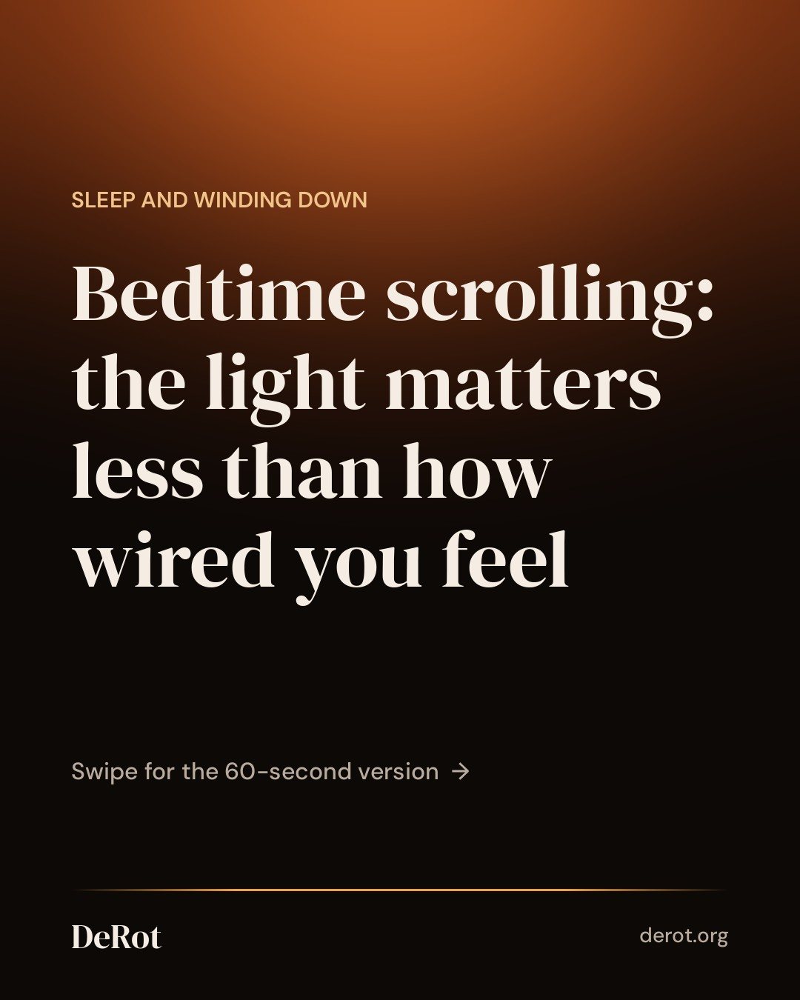
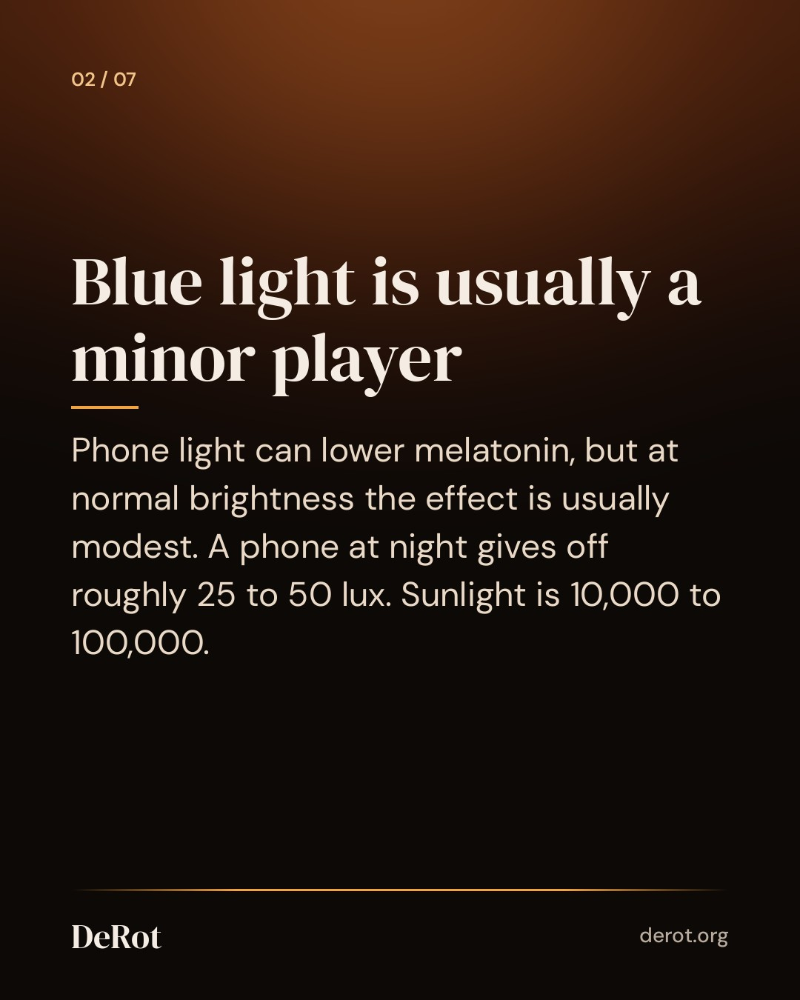
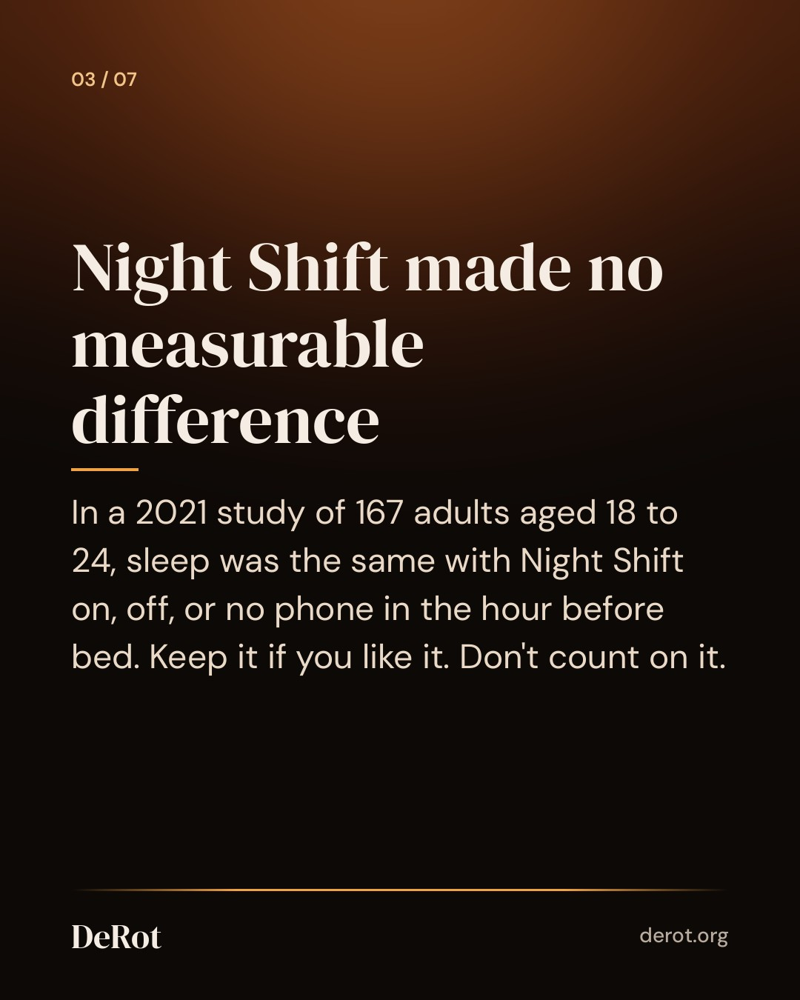
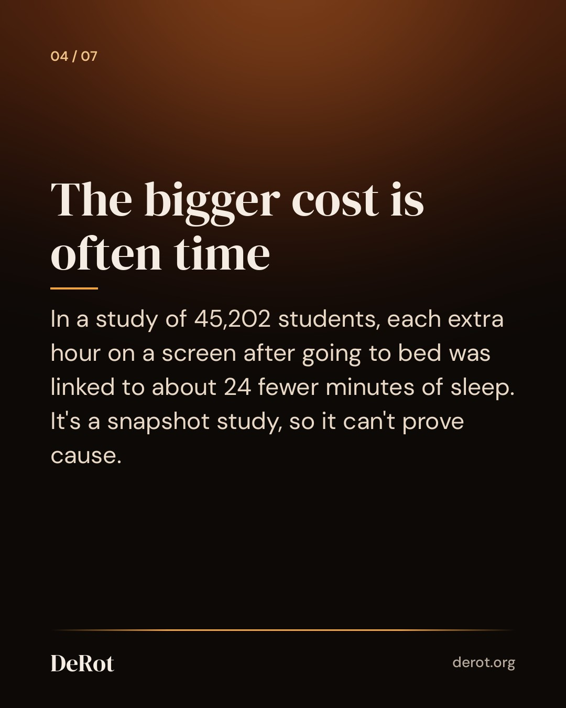
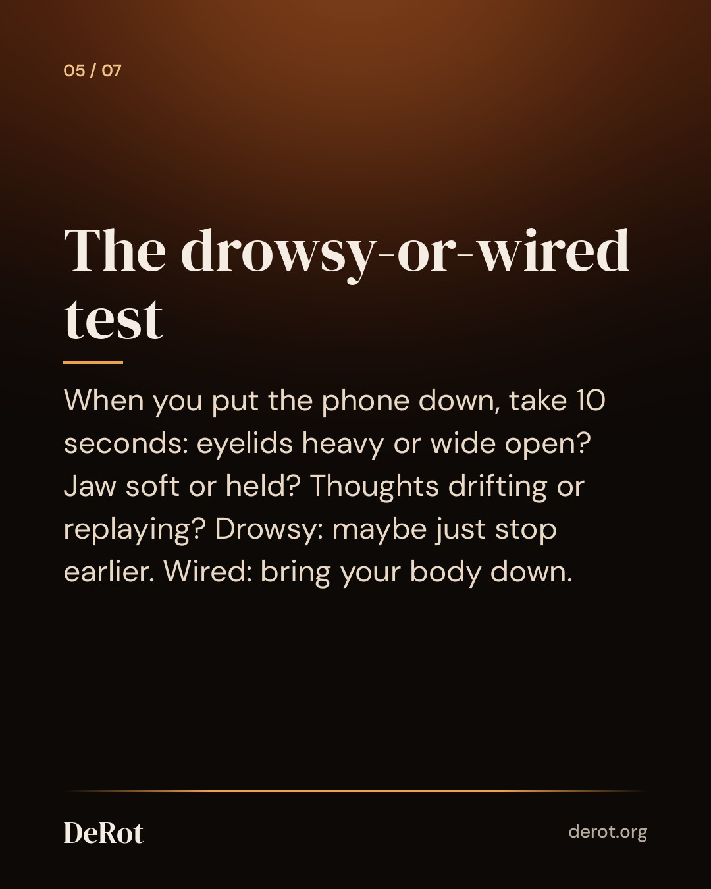
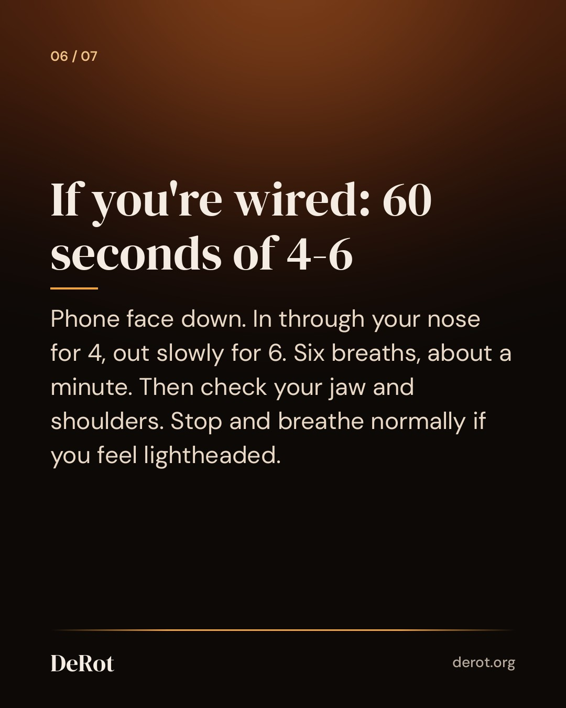

Is Scrolling Before Bed Bad? What Matters More Than Blue Light
Carousel (Instagram)







Instagram caption
Two people scroll for the same 30 minutes before bed. One drifts off. The other lies there with a tight jaw. The minutes matter less than the state you're in when you stop. In 2024, a panel of 16 experts agreed screens harm sleep in children and teens. For adults, they reached no consensus. Light still counts for some people. In one study, sensitivity to evening light varied more than 50-fold between individuals (that used room lighting, not phones). So if you suspect you're sensitive, lowering brightness and keeping room lights dim is simpler than buying anything. Content is the part night mode can't touch. A heated comment thread, a work message, a news alert: each asks your body to respond. Experts think this probably matters more than the light, though the evidence there isn't settled either. Inconsistent nights don't mean you're doing it wrong. After a long, draining day, sleep pressure often wins no matter what you scrolled. Slow breathing can help you feel calmer in the moment. It isn't a sleep treatment. If poor sleep happens most nights for several weeks, talk to a doctor or sleep specialist. If you'd rather not count in the dark, there's a free 60-second calm 4-6 breathing timer on our site. Full guide: link in bio. #sleephygiene #breathwork #nervoussystemregulation #windingdown #bedtimeroutine
Threads
Something I didn't expect: a 2024 panel of 16 experts agreed screens hurt sleep in kids and teens, but reached no consensus for adults. What seems to matter more is how late "one more" pushes your bedtime, and whether you put the phone down drowsy or wired. If you're wired, try six slow breaths: in for 4, out for 6. https://derot.org/blog/is-scrolling-before-bed-bad/
Is scrolling before bed really that bad? For adults, the evidence is less clear than the headlines suggest. Phone light can lower melatonin, but at normal brightness the effect is usually modest, and Night Shift made no measurable difference to sleep in a 2021 study of 167 young adults. For many people, the bigger costs are a later bedtime and content that leaves them wound up. Next time you put the phone down, take ten seconds to check: heavy eyelids, or a tight jaw and a busy head? If you're wired, put the phone face down and breathe in for 4, out for 6, for about a minute. Stop if you feel lightheaded. The full guide covers what the research does and doesn't show.
Schedule (UTC)
| queued | 2026-10-14T19:12:00+00:00 | ||
| threads | queued | 2026-10-14T19:12:00+00:00 | |
| queued | 2026-10-14T23:30:00+00:00 |